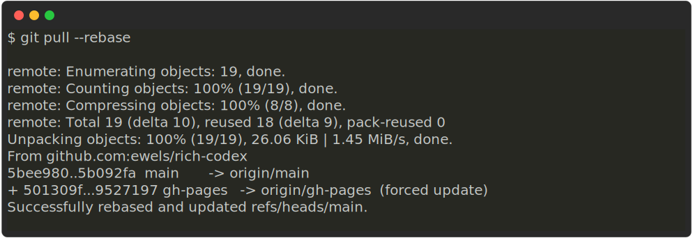
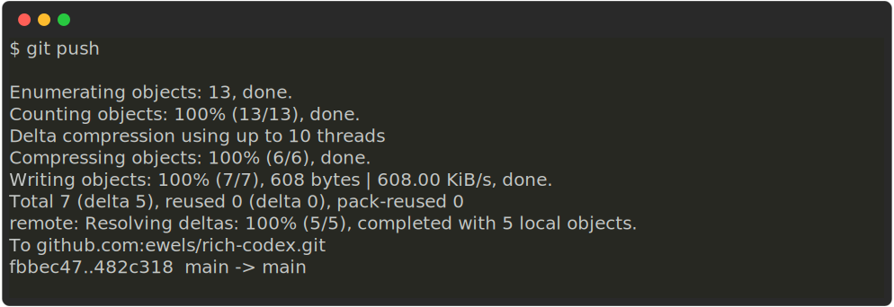

Troubleshooting
No image generated
First up: did you remember the !? It's  - I've spent longer than I'd care to admit debugging only to realise I missed the leading ! 🙈
Next, check the verbose log - it's saved as an artefact with GitHub Actions or locally you can use the -v/--verbose flag. The verbose log tells you which files are being searched and gives you more insight into what rich-codex is doing.
Can't push new commits
If you're fairly new to using git, you might find this error message a bit intimidating when you first see it:

Fear not, what has likely happened is:
- Your rich-codex GitHub Action has run since you last pushed
- It created some new images and you have set it to automatically commit these new images to your repository
- Because of this, your git remote now has new commits that you don't yet have locally
- Git doesn't let you push your work until that's resolved
The fix is usually simple - you need to pull the new commits and tell git to rebase your new work on top of that. Git will shuffle the commits one in front of the other and then you'll be able to push without any issues:

